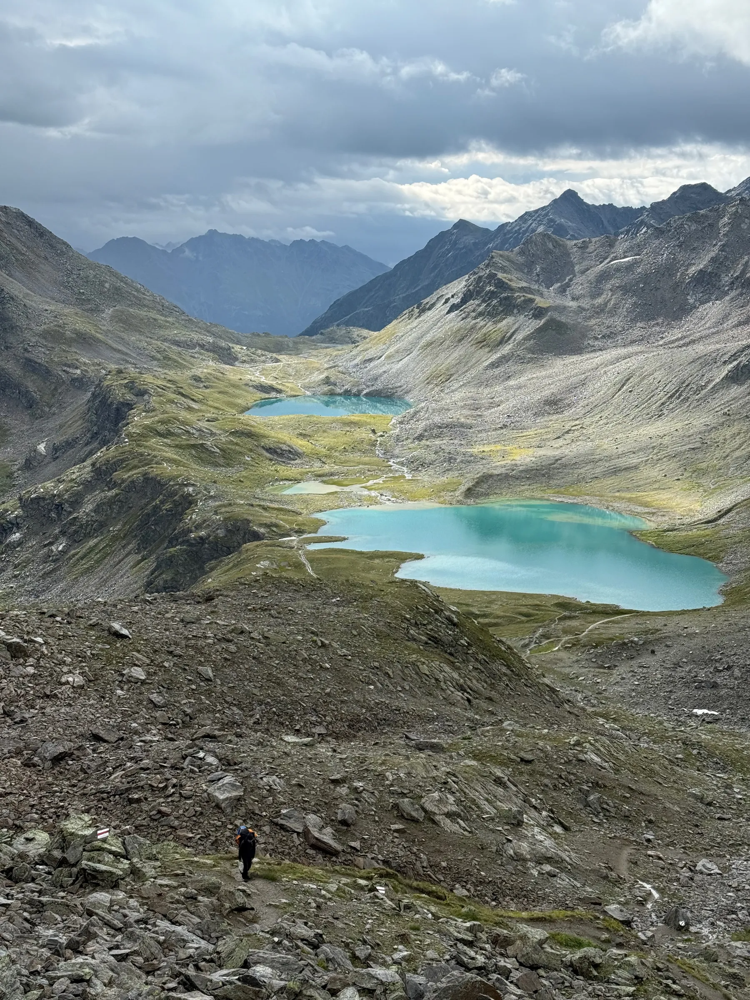

Photo · @leon.helgALPINE LAKES
A string of impossibly turquoise lakes in a grey cirque above Davos. Worth every metre of elevation.
From Flüelapass, take the path up past the Winterlücke to the Jörifluessee saddle. Four hours one way if you are moving.
The colour is glacial flour. It reads even stronger under grey skies, so do not write off a cloudy day.
A figure on the switchback trail adds scale. Do not crop them out, you need something to anchor the frame.